Band 1
Die unglaubliche Reise eines Wassertropfens
Woher kommt der Regen und wohin verschwindet das Wasser?
Malbuch-Reihe für Kinder von 6–9 Jahren
Warum fliegt eine Rakete? Woher kommt der Wind? Mit Max, dem Forscher-Roboter Lumi und einem neuen Gast pro Band entdecken Kinder die Welt: lesen, ausmalen, rätseln und forschen.
Jetzt erhältlich
Die ersten Malbücher sind bei Amazon erhältlich. Weitere Bände folgen und werden hier verlinkt.
Band 1
Woher kommt der Regen und wohin verschwindet das Wasser?
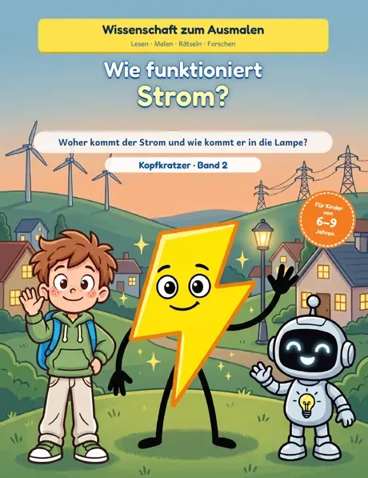

So ist jeder Band aufgebaut
Jeder Band beantwortet eine große Frage aus Natur und Technik – kindgerecht erklärt und zum Selbermachen.
Kurze Texte in klaren Sätzen, passend für Grundschulkinder.
Große Motive zum Ausmalen in jedem Band.
Versuche für zu Hause mit Dingen aus dem Haushalt.
Labyrinthe, Rätsel und ein Test mit Lösungen und Urkunde.
Die Reihe
Jeder Band hat einen neuen Gast und ein eigenes Thema. Max und Lumi sind immer dabei. Zu jedem Buch gibt es eine eigene Seite mit Blick ins Buch.
 ErhältlichBand 1Die unglaubliche Reise eines Wassertropfens
ErhältlichBand 1Die unglaubliche Reise eines Wassertropfens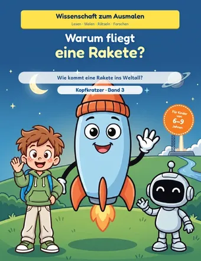
Band 3Warum fliegt eine Rakete?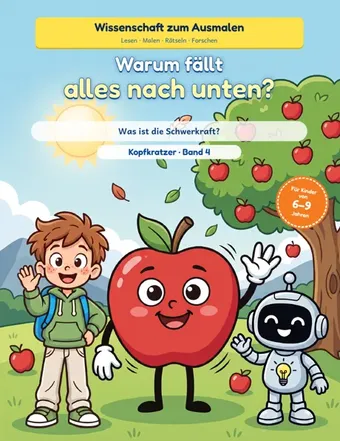
Band 4Warum fällt alles nach unten?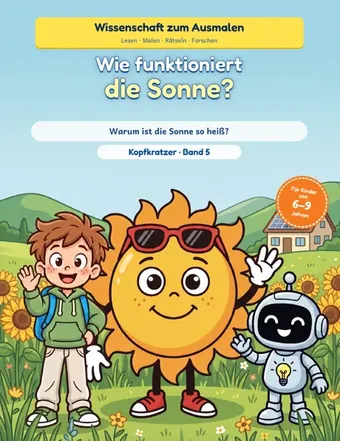
Band 5Wie funktioniert die Sonne? Band 6Woher kommen Regenbogen?
Band 6Woher kommen Regenbogen? Band 8Warum gibt es Vulkane?
Band 8Warum gibt es Vulkane?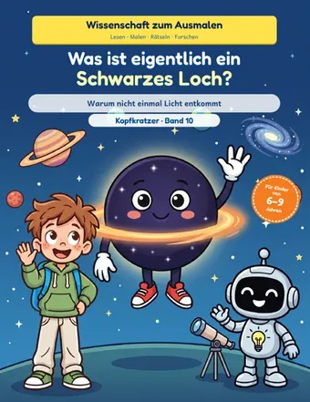
Band 10Was ist eigentlich ein Schwarzes Loch?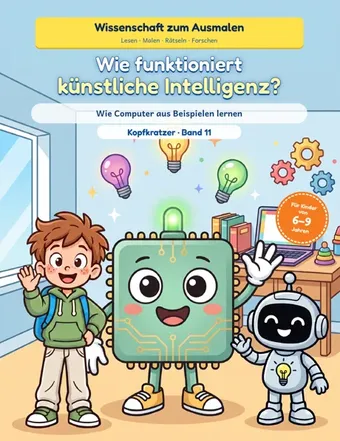
Band 11Wie funktioniert künstliche Intelligenz?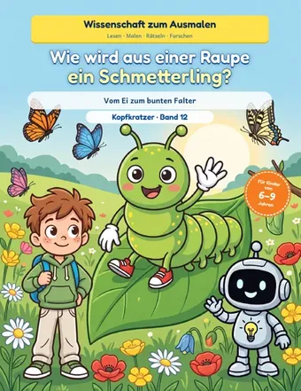
Band 12Wie wird aus einer Raupe ein Schmetterling?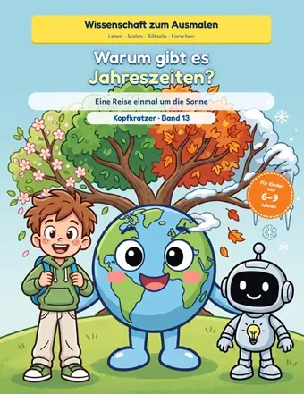
Band 13Warum gibt es Jahreszeiten?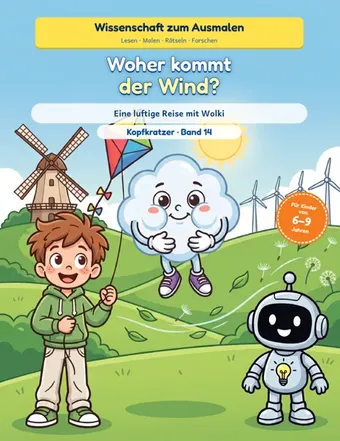
Band 14Woher kommt der Wind?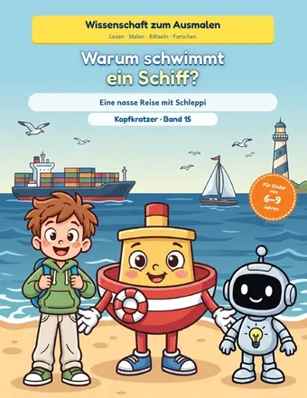
Band 15Warum schwimmt ein Schiff?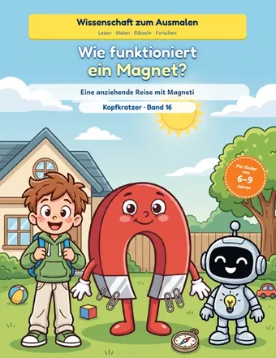
Band 16Wie funktioniert ein Magnet?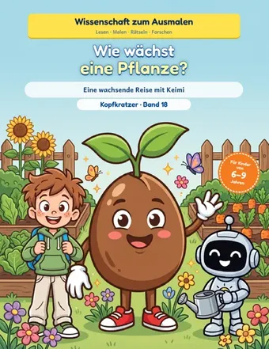
Band 18Wie wächst eine Pflanze?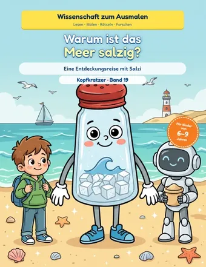
Band 19Warum ist das Meer salzig?Sonderband
Vom Nikolaus, dem Tannenbaum und dem Stern: Flocki, Krümel und Tanni begleiten Max und Lumi durch die Adventszeit. Mit Geschichten, Ausmalbildern, Rätseln und Experimenten.
 Erhältlich
Erhältlich
Für Erwachsene
Detailreiche Motive zum Entspannen: zum Ausmalen mit Buntstiften oder Fineliner.

Mandala-Malbuch
Eine Weltreise zum Ausmalen und Entspannen: 30 berühmte Bauwerke von Eiffelturm und Taj Mahal bis Schloss Neuschwanstein, verziert mit feinen Mandala- und Zentangle-Mustern, die die ganze Seite füllen.

Detailreiches Malbuch
Feine Motive. Ruhige Stunden. 38 kunstvolle Ausmalseiten mit vielen feinen Details, von Gewächshaus und Mondgarten bis zu Leuchtturm und Bibliothek. Ideal für den Fineliner.


Über mich
Ich komme aus Norddeutschland, habe Maschinenschlosser gelernt und war schon immer ein Allrounder, der wissen will, wie die Dinge funktionieren. Ich habe drei Kinder und bin stolzer Opa von vier Enkelkindern.
Kopfkratzer ist an einem ganz normalen Morgen entstanden. Mein Job ist oft stressig, und ich wusste: Ich brauche etwas, bei dem ich zur Ruhe komme und das mir Freude macht. Da kamen mir meine Enkel in den Sinn – und die Idee mit den Malbüchern war geboren. Eigentlich sollten es nur ein paar Bücher für die Familie werden. Heute ist daraus die Reihe „Wissenschaft zum Ausmalen“ geworden, mit Max, dem Roboter Lumi und in jedem Band einem neuen Gast.
Warum Wissenschaft? Weil ich finde, dass sie bei Kindern viel zu kurz kommt. Dabei stecken Kinder voller Fragen: Wo kommt der Regen her? Warum fällt alles nach unten? Wie fliegt eine Rakete? Meine Bücher sollen helfen, die Antworten spielerisch zu entdecken.
Ich habe ADHS, und mein Kopf steckt voller Ideen. Für mich ist das kein Nachteil, sondern genau das, was Kopfkratzer ausmacht: nie Stillstand, immer etwas Neues entdecken. Über 1000 Ideen warten noch – und ich freue mich darauf, sie mit euch zu teilen!
Euer Mathias
YouTube
Die Videos zu den Büchern erscheinen bald auf dem YouTube-Kanal. Dort gibt es schon jetzt Antworten auf Fragen aus der Wissenschaft.
Gut zu wissen
Für Kinder von 6 bis 9 Jahren, zum Selberlesen oder Vorlesen. Die Texte sind kurz und in klaren Sätzen geschrieben.
Einfache Erklärungen, Bilder zum Ausmalen, 4 Experimente für zu Hause, Rätsel, Labyrinthe und ein Wissenstest, dazu Forscher-Notizen und eine Urkunde. Jeder Band hat 80 Seiten im Format 21,6 × 27,9 cm.
Die Versuche gelingen zu Hause mit Dingen aus dem Haushalt.
Die ersten Malbücher sind bei Amazon erhältlich. Weitere Bände folgen und werden hier verlinkt. Zu den erhältlichen Büchern